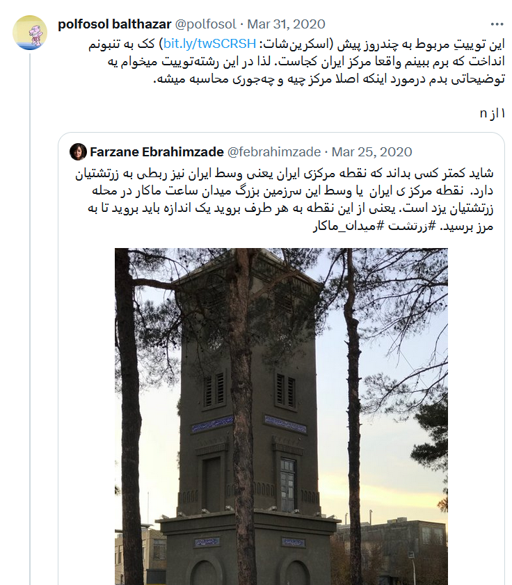
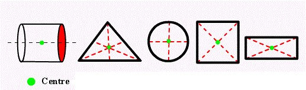
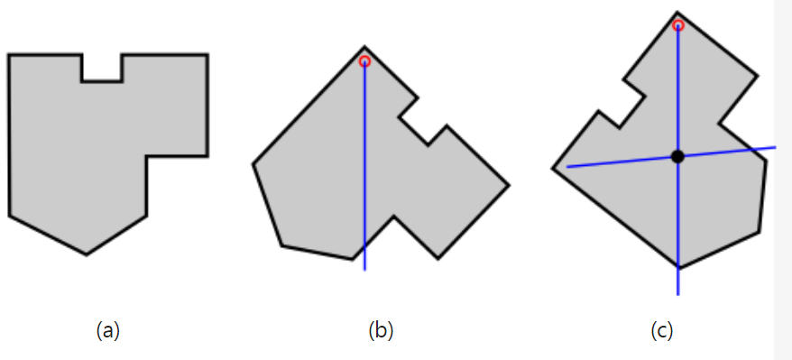
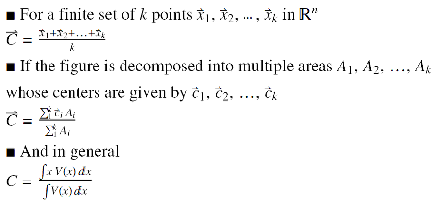
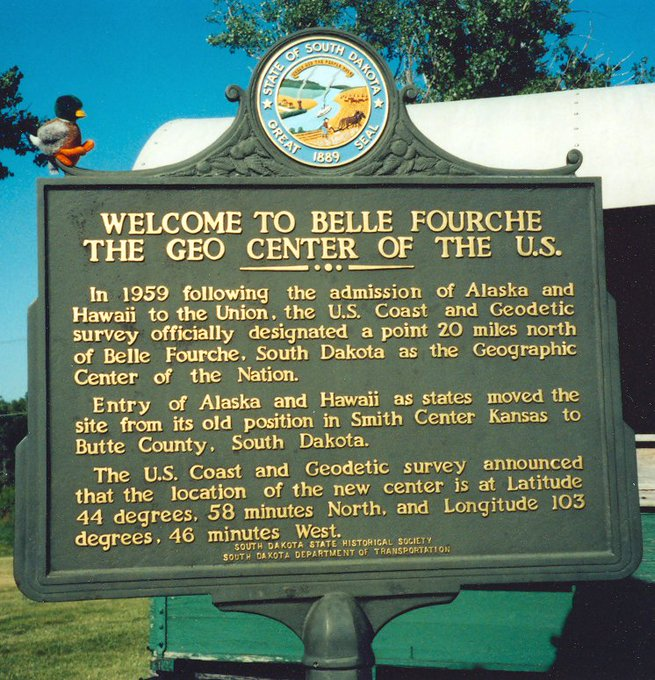
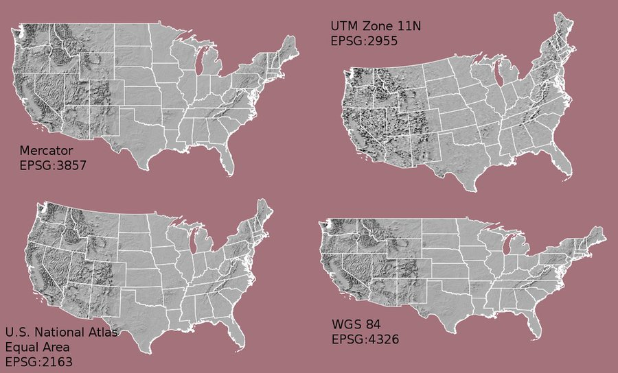
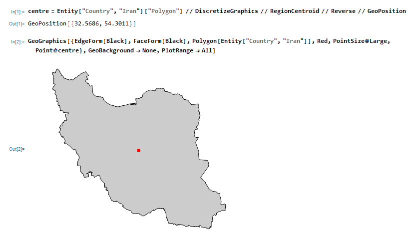
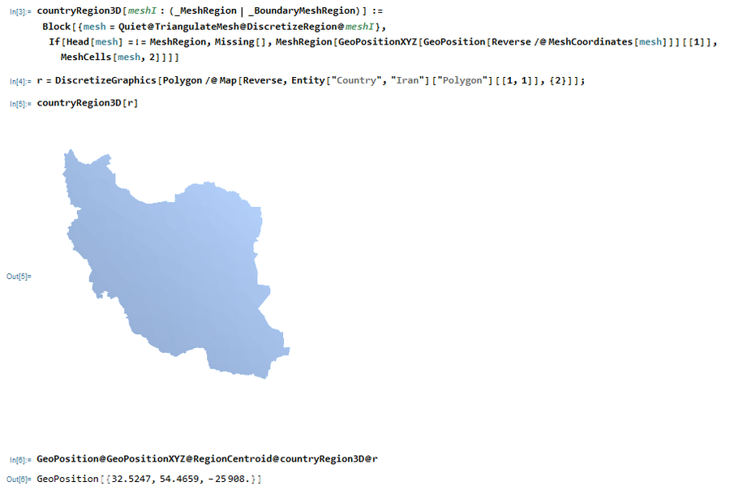
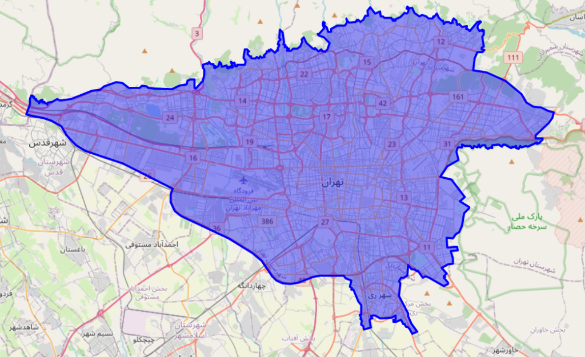

من چند سال پیش توییت زیر رو در توییتر دیدم و دقیقا مثل ایشون، کک به تنبونم انداخت که برم ببینم مرکز شهر تهران کجاست؟ اما اون زمان درگیر کار های مختلف بودم و بعدش هم که درگیر سربازی بودم و این قضیه به فراموشی سپرده شد.

توصیه میکنم ایشون رو فالو کنید چون مطالب خوبی مینویسن. اما برای اینکه هم پیوستگی مطالب حفظ بشه و هم لازم نباشه توضیحات عالی ایشون رو بازنویسی کنم، محتوای توییت ایشون رو عینا در ادامه مینویسم که بعدش بریم سراغ کار اصلی خودمون.
محتوای توییت :
این توییتِ مربوط به چندروز پیش (اسکرینشات: http://bit.ly/twSCRSH) کک به تنبونم انداخت که برم ببینم واقعا مرکز ایران کجاست. لذا در این رشتهتوییت میخوام یه توضیحاتی بدم درمورد اینکه اصلا مرکز چیه و چهجوری محاسبه میشه. مرکز یک دایره از تمام نقاط روی دایره فاصلهی یکسانی داره. برای یک شکل متقارن مثل مربع هم مرکز تقارن خیلی تعریف سادهای داره. اما برای شکلهای نامتقارن و اجقوجق مرکز یعنی چی؟ طبق تعریف ریاضیاتی، مرکز (centroid) یک شکل اون نقطهایه که برابره با میانگینِ تمام نقاط روی شکل.

به بیان فیزیکی، فرض کنید یه شکل «مسطح» رو به صورت افقی بذاریم رو نوک مداد. اگر نقطهی تماس مرکز شکل باشه، اون وقت تعادل خودش رو میتونه حفظ کنه. راه ساده برای محاسبهی مرکز شکل اینه که به اینصورت از یه نخی آویزونش کنیم و امتداد نخ رو رسم کنیم. با آویزون کردنش از دو نقطه، مرکزش بهدست میاد.

اما فرمول ریاضیش ممکنه پیچیده به نظر بیاد چون توش انتگرال داره. اینجاست که واقعا انتگرال بهکار آدمیزاد میاد و باید لعنت فرستاد بر اونهایی که با حذف انتگرال ازبرنامه درسی، جوانان ما رو ازمحاسبهی مرکز شکلها محروم کرده و به فساد سوق دادن. به هرحال، فرمول ریاضیش اینه:

موسسه ملی ژئودتیک آمریکا (NGS) در اوایل قرن ۲۰ یه بررسی انجام داد برای تعیین مرکز این کشور. اینجا جزئیاتش رو توضیح داده:
درواقع کاری که انجام دادن کمابیش همونی بود که گفتم. نقشه رو روی کاغذ درآوردن و بعد با آویزون کردن مرکزش رو پیدا کردن. اما یه مشکلی تو این روش هست که توضیح خواهم داد. به هرحال، طبق این محاسبه مرکز آمریکا شد یه جایی طرفای داکوتای جنوبی. بعد رفتن تو اون نقطه یه لوح یادبود زدن و به این صورت امامزاده و زیارتگاه درست کردن:

مشکلش اینه که زمین کرویه و وقتی که نقشهی کشورا رو میخوان رو کاغذ مسطح رسم کنن اون بالاش پهن میشه و کلا چیزی که رو کاغذ دوبعدی میاد اونی نیست که واقعا باید باشه. علاوهبراین، آلاسکا و هاوایی از اون تیکهی اصلی آمریکا جدان و نمیشه نقشهی یکپارچه ازش درآورد. این شکلها رو ببینید:

بعدها با ابزارهای محاسباتی پیشرفتهتر و نقشههای دقیقتر، محاسباتی برای تعیین مرکز کشورها انجام گرفت. این صفحهی ویکیپدیا یه لیستی از مراکز کشورها رو آورده:
اما متاسفانه کشور ما تو اون لیست غایبه و لذا کس نخارد پشت من جز ناخن انگشت من. بریم برای محاسبه. چون شکل کشور ما نسبت به مثلا شیلی یا ژاپن زیاد اجقوجق نیست، سادهترین کار اینه که وسطِ طول و عرض جغرافیاییش رو حساب کنیم. عرض جغرافیایی ایران از حدود ۲۵ تا ۴۰ درجه گسترده شده و طول جغرافیاییش از ۴۴ تا ۶۳ درجه. لذا میانگینِ این دو میشه بین نائین و میبد:
خب واضحه که این روش خطای زیادی داره. حالا خوشبختانه یه ابزار قوی دراختیار ما هست به اسم Mathematica، که باهاش میشه انتگرال عددی رو با تقریب خیلی خوبی روی سطحهای اجقوجق محاسبه کرده و نقطه وسط نقشه رو پیدا کرد. کدش رو به این صورت نوشتم:

با محاسبه میانگین انتگرال روی سطح دوبعدی، مختصات دقیق مرکز ایران میشه اینجا که نقطهایه در شمالشرقی اردکان و میبد:
اما همونطور که گفتم، نقشهی یک کشور وقتی از سطح کرهی زمین روی یک سطح دوبعدی میاد، یه سری پهنشدگی و جمعشدگی داره که خطا ایجاد میکنه.
این نکته رو هم درنظر بگیرید که ایران نسبت به آمریکا خیلی کوچکتره و بالطبع خمیدگیش روی سطح کرهی زمین خیلی کمتره. لذا این خطای تسطیح نقشهی ایران قاعدتا خیلی کمه. ولی برای اینکه دلمون آروم بگیره میگیم سگ خورد. بدون تسطیح نقشه، همون میانگین انتگرالِ سطح سهبعدی رو حساب میکنیم:

با این روش، نقطهای که محاسبه میشه یک مختصات سهبعدی داره. اون عدد سوم که تو نتیجهی آخر ملاحظه میکنید ارتفاعشه. پس با تقریب خوبی میشه گفت که دیگه این محاسبه دقیقه و مو لای درزش نمیره. مرکز ایران میافته روستای پَتکستان در حوالی اردکان:
تا اینجای کار توضیحات ایشون بود. بنابراین متوجه شدید که این کار چه جوری انجام میشه. حالا من میخوام همین کار رو برای شهر تهران انجام بدم. اول باید مرز شهر تهران رو پیدا کنم که از فایل GeoJson زیر استفاده کردم :
این فایل با ۴۱۳۹ نقطه، مرز تهران رو نشون میده که به صورت زیره :

با استفاده از کتابخونه shapely توی پایتون نقطه زیر رو به عنوان نقطه مرکزی تهران پیدا کردم :
nb.neighbours()
| title | date | |
|---|---|---|
| prev | معمای سریال Person of Interest | ۱۴۰۲/۰۹ |
| next | نقشهٔ Dead Drop های جهان | ۱۴۰۲/۰۹ |